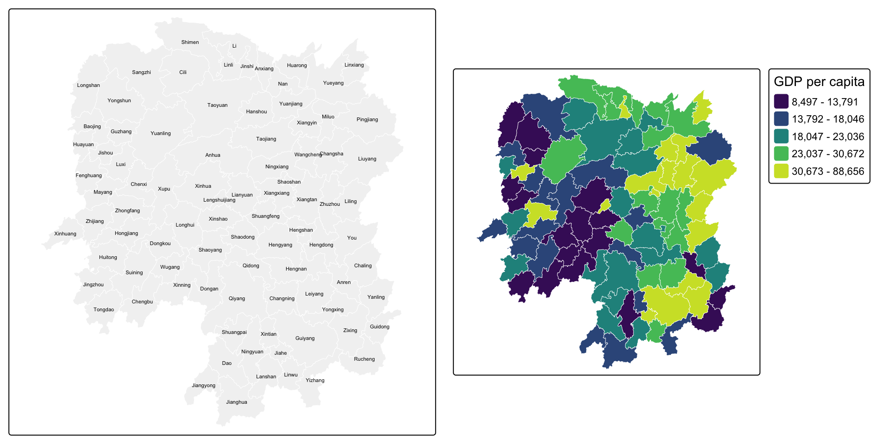
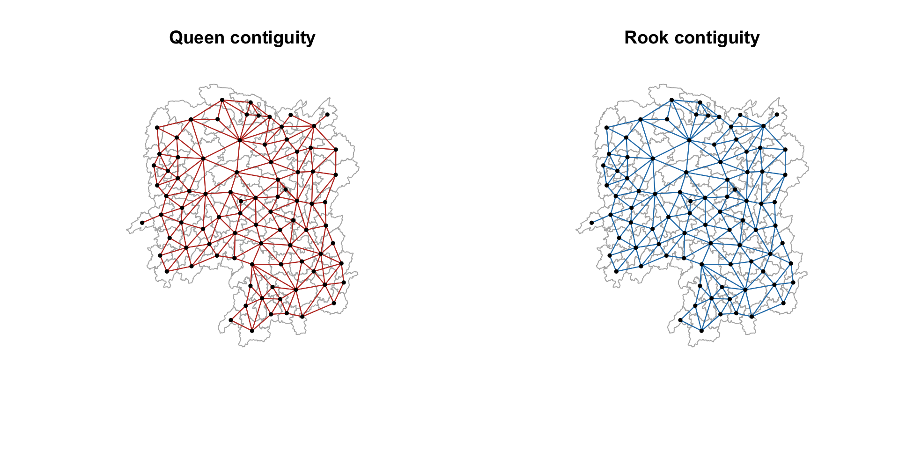
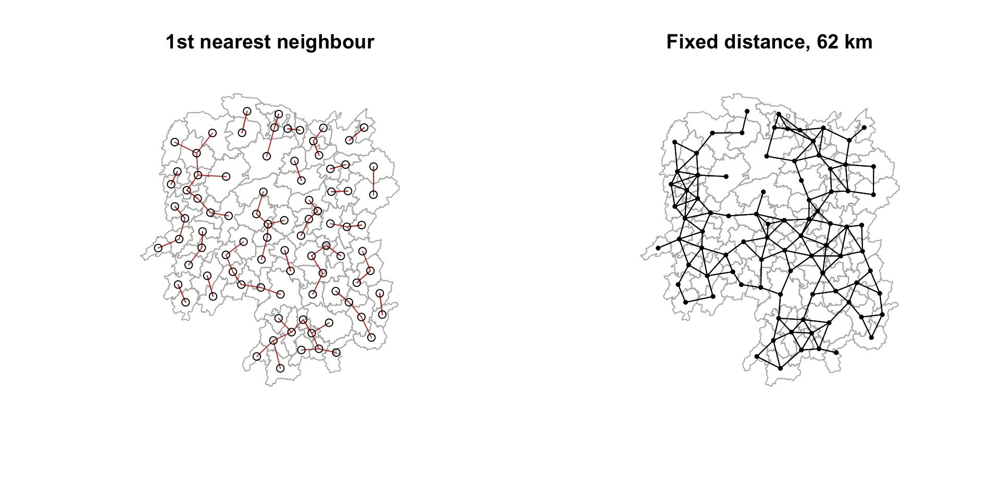
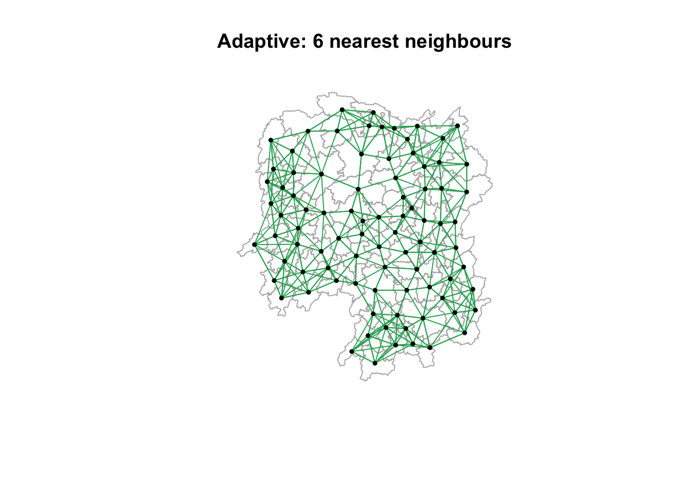
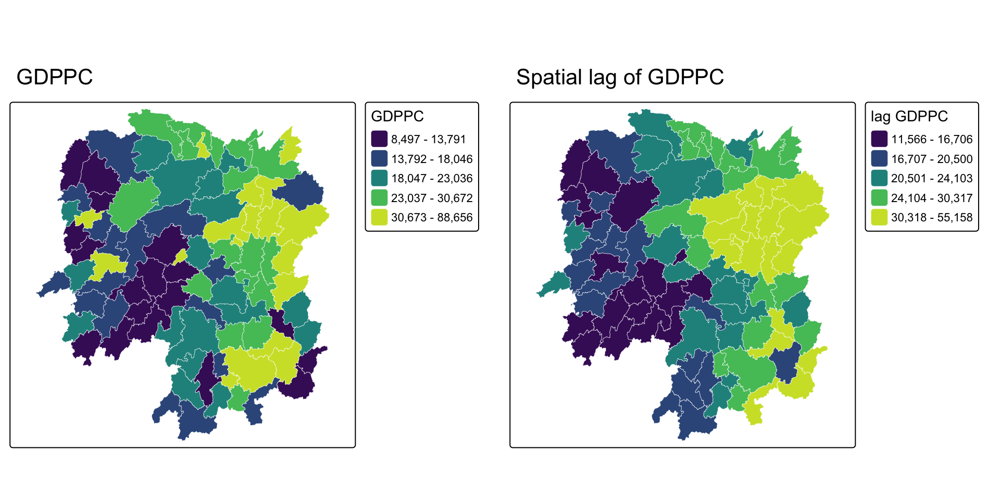
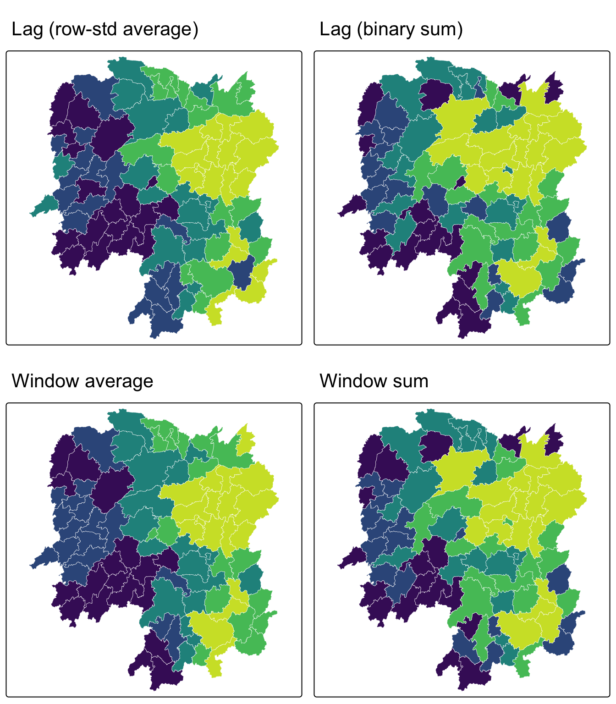
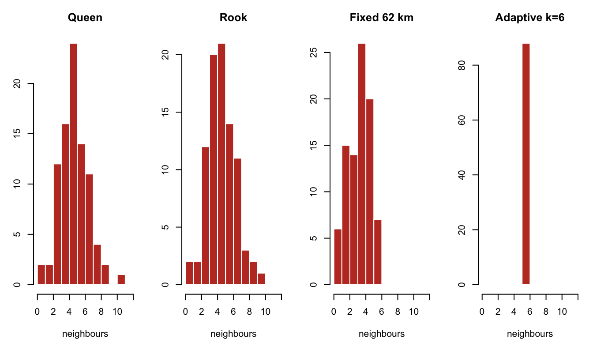
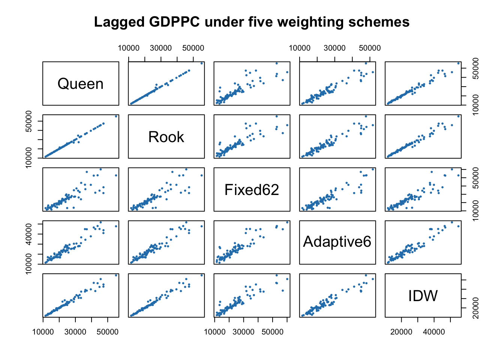
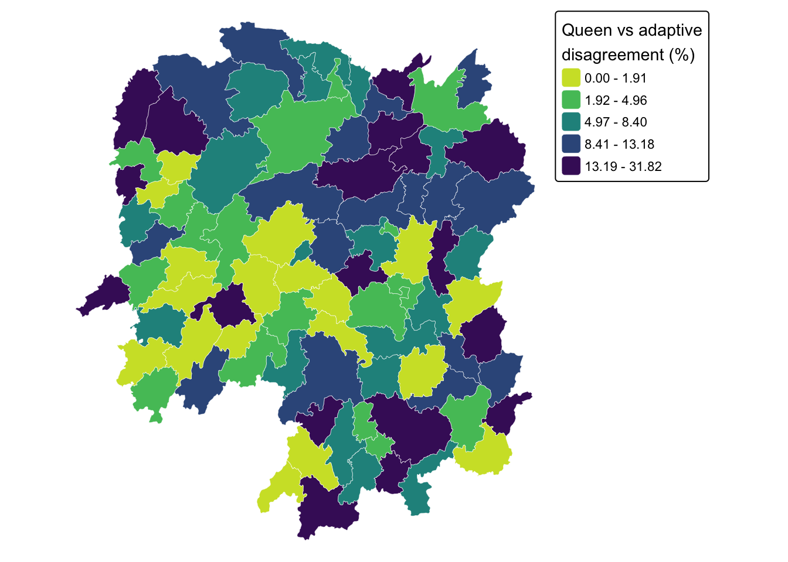

pacman::p_load(sf, spdep, tmap, tidyverse, knitr)Spatial Weights and Applications
HANDS-ON EXERCISE 4
R spdep Contiguity Spatial Lag
This exercise follows Spatial Weights and Applications, the first reading in the Spatial Weights block of the course.
1. Overview
Everything in Exercises 2 and 3 treated space as distance between points. This exercise switches to areal data, meaning polygons with values attached, where the question is no longer “how far apart are these events” but “which regions are neighbours, and how much should each neighbour count?”
That is what a spatial weights matrix encodes. It is the object that every subsequent technique in the course depends on: spatial autocorrelation, clustering, and geographically weighted regression all take a weights matrix as input. Getting it wrong quietly invalidates everything downstream, which is why a whole exercise is spent on it.
By the end I should be able to compute contiguity weights, distance-based weights, inverse-distance weights, row-standardise them, and use them to derive spatially lagged variables.
2. The Study Area and Data
| Dataset | Description | Format |
|---|---|---|
Hunan |
County boundary layer for Hunan province, China, 88 counties | ESRI Shapefile (polygon) |
Hunan_2012.csv |
Selected local development indicators for 2012 | CSV |
A change of scene from Singapore. Hunan gives 88 areal units with a real spread of development levels, which is exactly what is needed to see spatial weighting do something visible. Singapore’s 332 subzones are too small and too uniformly urban to make a good contiguity example.
3. Getting Started
4. Getting the Data Into R
4.1 Importing the Shapefile
hunan <- st_read(dsn = "data/geospatial",
layer = "Hunan",
quiet = TRUE)hunanSimple feature collection with 88 features and 7 fields
Geometry type: POLYGON
Dimension: XY
Bounding box: xmin: 108.7831 ymin: 24.6342 xmax: 114.2544 ymax: 30.12812
Geodetic CRS: WGS 84
First 10 features:
NAME_2 ID_3 NAME_3 ENGTYPE_3 Shape_Leng Shape_Area County
1 Changde 21098 Anxiang County 1.869074 0.10056190 Anxiang
2 Changde 21100 Hanshou County 2.360691 0.19978745 Hanshou
3 Changde 21101 Jinshi County City 1.425620 0.05302413 Jinshi
4 Changde 21102 Li County 3.474325 0.18908121 Li
5 Changde 21103 Linli County 2.289506 0.11450357 Linli
6 Changde 21104 Shimen County 4.171918 0.37194707 Shimen
7 Changsha 21109 Liuyang County City 4.060579 0.46016789 Liuyang
8 Changsha 21110 Ningxiang County 3.323754 0.26614198 Ningxiang
9 Changsha 21111 Wangcheng County 2.292093 0.13049161 Wangcheng
10 Chenzhou 21112 Anren County 2.240739 0.13343936 Anren
geometry
1 POLYGON ((112.0625 29.75523...
2 POLYGON ((112.2288 29.11684...
3 POLYGON ((111.8927 29.6013,...
4 POLYGON ((111.3731 29.94649...
5 POLYGON ((111.6324 29.76288...
6 POLYGON ((110.8825 30.11675...
7 POLYGON ((113.9905 28.5682,...
8 POLYGON ((112.7181 28.38299...
9 POLYGON ((112.7914 28.52688...
10 POLYGON ((113.1757 26.82734...4.2 Importing the CSV
hunan2012 <- read_csv("data/aspatial/Hunan_2012.csv", show_col_types = FALSE)glimpse(hunan2012)Rows: 88
Columns: 29
$ County <chr> "Anhua", "Anren", "Anxiang", "Baojing", "Chaling", "Changn~
$ City <chr> "Yiyang", "Chenzhou", "Changde", "Hunan West", "Zhuzhou", ~
$ avg_wage <dbl> 30544, 28058, 31935, 30843, 31251, 28518, 54540, 28597, 33~
$ deposite <dbl> 10967.0, 4598.9, 5517.2, 2250.0, 8241.4, 10860.0, 24332.0,~
$ FAI <dbl> 6831.7, 6386.1, 3541.0, 1005.4, 6508.4, 7920.0, 33624.0, 1~
$ Gov_Rev <dbl> 456.72, 220.57, 243.64, 192.59, 620.19, 769.86, 5350.00, 1~
$ Gov_Exp <dbl> 2703.0, 1454.7, 1779.5, 1379.1, 1947.0, 2631.6, 7885.5, 11~
$ GDP <dbl> 13225.0, 4941.2, 12482.0, 4087.9, 11585.0, 19886.0, 88009.~
$ GDPPC <dbl> 14567, 12761, 23667, 14563, 20078, 24418, 88656, 10132, 17~
$ GIO <dbl> 9276.90, 4189.20, 5108.90, 3623.50, 9157.70, 37392.00, 513~
$ Loan <dbl> 3954.90, 2555.30, 2806.90, 1253.70, 4287.40, 4242.80, 4053~
$ NIPCR <dbl> 3528.3, 3271.8, 7693.7, 4191.3, 3887.7, 9528.0, 17070.0, 3~
$ Bed <dbl> 2718, 970, 1931, 927, 1449, 3605, 3310, 582, 2170, 2179, 1~
$ Emp <dbl> 494.310, 290.820, 336.390, 195.170, 330.290, 548.610, 670.~
$ EmpR <dbl> 441.4, 255.4, 270.5, 145.6, 299.0, 415.1, 452.0, 127.6, 21~
$ EmpRT <dbl> 338.0, 99.4, 205.9, 116.4, 154.0, 273.7, 219.4, 94.4, 174.~
$ Pri_Stu <dbl> 54.175, 33.171, 19.584, 19.249, 33.906, 81.831, 59.151, 18~
$ Sec_Stu <dbl> 32.830, 17.505, 17.819, 11.831, 20.548, 44.485, 39.685, 7.~
$ Household <dbl> 290.4, 104.6, 148.1, 73.2, 148.7, 211.2, 300.3, 76.1, 139.~
$ Household_R <dbl> 234.5, 121.9, 135.4, 69.9, 139.4, 211.7, 248.4, 59.6, 110.~
$ NOIP <dbl> 101, 34, 53, 18, 106, 115, 214, 17, 55, 70, 44, 84, 74, 17~
$ Pop_R <dbl> 670.3, 243.2, 346.0, 184.1, 301.6, 448.2, 475.1, 189.6, 31~
$ RSCG <dbl> 5760.60, 2386.40, 3957.90, 768.04, 4009.50, 5220.40, 22604~
$ Pop_T <dbl> 910.8, 388.7, 528.3, 281.3, 578.4, 816.3, 998.6, 256.7, 45~
$ Agri <dbl> 4942.253, 2357.764, 4524.410, 1118.561, 3793.550, 6430.782~
$ Service <dbl> 5414.5, 3814.1, 14100.0, 541.8, 5444.0, 13074.6, 17726.6, ~
$ Disp_Inc <dbl> 12373, 16072, 16610, 13455, 20461, 20868, 183252, 12379, 1~
$ RORP <dbl> 0.7359464, 0.6256753, 0.6549309, 0.6544614, 0.5214385, 0.5~
$ ROREmp <dbl> 0.8929619, 0.8782065, 0.8041262, 0.7460163, 0.9052651, 0.7~4.3 Performing the Relational Join
The join key is County, which appears in both tables. I name it explicitly rather than letting dplyr guess, so that the code fails loudly if the column ever changes rather than silently joining on something else.
hunan <- left_join(hunan, hunan2012, by = "County") %>%
select(1:4, 7, 15)
names(hunan)[1] "NAME_2" "ID_3" "NAME_3" "ENGTYPE_3" "County" "GDPPC"
[7] "geometry" nrow(hunan)[1] 8888 counties in, 88 out, with no rows duplicated or dropped by the join, which is the first thing worth checking after any left_join onto a spatial layer.
5. Visualising the Regional Development Indicator
basemap <- tm_shape(hunan) +
tm_polygons(fill = "grey95", col = "white", lwd = 0.5) +
tm_text("NAME_3", size = 0.35)
gdppc <- tm_shape(hunan) +
tm_polygons(fill = "GDPPC",
fill.scale = tm_scale_intervals(style = "quantile", values = "viridis"),
fill.legend = tm_legend(title = "GDP per capita"),
col = "white", lwd = 0.4)
tmap_arrange(basemap, gdppc, asp = 1, ncol = 2)
NoteWhat the choropleth already suggests
High GDP per capita is not scattered at random. The brighter counties sit together, clustered around Changsha in the north-east, and the lower quantiles form a contiguous band through the west. That visual impression of “like next to like” is precisely what spatial autocorrelation statistics formalise, but none of them can be computed until I have defined what “next to” means, which is this exercise.
6. Computing Contiguity Spatial Weights
Contiguity weights define neighbours by shared boundaries. The two standard rules are named after chess moves:
- Queen: regions are neighbours if they share any boundary point, edge or corner.
- Rook: regions are neighbours only if they share an edge.
6.1 Queen Contiguity
wm_q <- poly2nb(hunan, queen = TRUE)
summary(wm_q)Neighbour list object:
Number of regions: 88
Number of nonzero links: 448
Percentage nonzero weights: 5.785124
Average number of links: 5.090909
Link number distribution:
1 2 3 4 5 6 7 8 9 11
2 2 12 16 24 14 11 4 2 1
2 least connected regions:
30 65 with 1 link
1 most connected region:
85 with 11 linksThe most connected county:
hunan$County[which.max(card(wm_q))][1] "Taoyuan"Its neighbours:
hunan$NAME_3[wm_q[[which.max(card(wm_q))]]] [1] "Anxiang" "Hanshou" "Jinshi" "Linli" "Shimen" "Yuanling"
[7] "Anhua" "Nan" "Cili" "Sangzhi" "Taojiang"And their GDP per capita:
hunan$GDPPC[wm_q[[which.max(card(wm_q))]]] [1] 23667 20981 34592 25554 27137 24194 14567 21311 18714 14624 19509The full weight matrix, printed as the first few rows of neighbour lists:
str(wm_q, list.len = 5)List of 88
$ : int [1:5] 2 3 4 57 85
$ : int [1:5] 1 57 58 78 85
$ : int [1:4] 1 4 5 85
$ : int [1:4] 1 3 5 6
$ : int [1:4] 3 4 6 85
[list output truncated]
- attr(*, "class")= chr "nb"
- attr(*, "region.id")= chr [1:88] "1" "2" "3" "4" ...
- attr(*, "call")= language poly2nb(pl = hunan, queen = TRUE)
- attr(*, "type")= chr "queen"
- attr(*, "snap")= num 9e-08
- attr(*, "sym")= logi TRUE
- attr(*, "ncomp")=List of 2
..$ nc : int 1
..$ comp.id: int [1:88] 1 1 1 1 1 1 1 1 1 1 ...6.2 Rook Contiguity
wm_r <- poly2nb(hunan, queen = FALSE)
summary(wm_r)Neighbour list object:
Number of regions: 88
Number of nonzero links: 440
Percentage nonzero weights: 5.681818
Average number of links: 5
Link number distribution:
1 2 3 4 5 6 7 8 9 10
2 2 12 20 21 14 11 3 2 1
2 least connected regions:
30 65 with 1 link
1 most connected region:
85 with 10 linksdata.frame(
Rule = c("Queen", "Rook"),
`Total links` = c(sum(card(wm_q)), sum(card(wm_r))),
`Average links` = round(c(sum(card(wm_q)), sum(card(wm_r))) / nrow(hunan), 3),
check.names = FALSE
) Rule Total links Average links
1 Queen 448 5.091
2 Rook 440 5.000
NoteQueen vs rook, and why the difference is small here
Queen finds a handful more links than rook. Those extra links are the corner-only contacts, where counties meet at a single point. On a regular grid the difference is large and systematic; on irregular administrative boundaries like these, exact corner-touching is rare, so the two rules very nearly agree.
That does not make the choice unimportant. It makes it cheap to defend: with so few cases in dispute, I can state that the substantive results are insensitive to the choice, which is a stronger position than having to argue for one rule on theory alone.
6.3 Visualising Contiguity Weights
The neighbour lists have to be drawn from county centroids, so those come first. st_centroid on the geometry column returns points; st_coordinates turns them into the plain longitude/latitude matrix that spdep expects.
coords <- st_coordinates(st_centroid(st_geometry(hunan)))
head(coords, 3) X Y
[1,] 112.1531 29.44346
[2,] 112.0371 28.86480
[3,] 111.8918 29.47097par(mfrow = c(1, 2))
plot(st_geometry(hunan), border = "grey70", main = "Queen contiguity")
plot(wm_q, coords, pch = 19, cex = 0.5, add = TRUE, col = "#c0392b")
plot(st_geometry(hunan), border = "grey70", main = "Rook contiguity")
plot(wm_r, coords, pch = 19, cex = 0.5, add = TRUE, col = "#2980b9")
par(mfrow = c(1, 1))7. Computing Distance-based Neighbours
Contiguity ignores distance entirely: a shared border counts the same whether the two county centres are 20 km or 200 km apart. Distance-based weights take the opposite view.
7.1 Determining the Cut-off Distance
The cut-off must be large enough that no county is left with zero neighbours. The standard approach is to find the distance to each county’s first nearest neighbour and take the maximum of those.
k1 <- knn2nb(knearneigh(coords))
k1dists <- unlist(nbdists(k1, coords, longlat = TRUE))
summary(k1dists) Min. 1st Qu. Median Mean 3rd Qu. Max.
24.79 32.56 38.00 39.07 44.52 61.81
ImportantThe mistake that cost me this section
My first attempt passed the output of st_centroid() straight into knearneigh(), an sfc object rather than a coordinate matrix, and got a maximum first-neighbour distance of 0.6 instead of 61.8. The longlat = TRUE argument was silently overridden, so spdep measured in degrees of latitude and longitude as though they were planar units. A 62-unit cut-off then made every county a neighbour of every other county, and the fixed-distance matrix came out with 87 links per county instead of about 4.
What makes this dangerous is that it does not error. It produces a perfectly well-formed weights matrix that is completely wrong, and every statistic computed from it afterwards would have been wrong too, with nothing to indicate a problem. The lesson: pass st_coordinates() output, and sanity-check that the distances come back in plausible kilometres before using them.
The maximum first-nearest-neighbour distance is about 62 km, so every county is guaranteed at least one neighbour at that cut-off.
7.2 Fixed Distance Weight Matrix
wm_d62 <- dnearneigh(coords, 0, 62, longlat = TRUE)
wm_d62Neighbour list object:
Number of regions: 88
Number of nonzero links: 324
Percentage nonzero weights: 4.183884
Average number of links: 3.681818 str(wm_d62, list.len = 5)List of 88
$ : int [1:5] 3 4 5 57 64
$ : int [1:4] 57 58 78 85
$ : int [1:4] 1 4 5 57
$ : int [1:3] 1 3 5
$ : int [1:4] 1 3 4 85
[list output truncated]
- attr(*, "class")= chr "nb"
- attr(*, "region.id")= chr [1:88] "1" "2" "3" "4" ...
- attr(*, "call")= language dnearneigh(x = coords, d1 = 0, d2 = 62, longlat = TRUE)
- attr(*, "dnn")= num [1:2] 0 62
- attr(*, "bounds")= chr [1:2] "GE" "LE"
- attr(*, "nbtype")= chr "distance"
- attr(*, "sym")= logi TRUE
- attr(*, "ncomp")=List of 2
..$ nc : int 1
..$ comp.id: int [1:88] 1 1 1 1 1 1 1 1 1 1 ...par(mfrow = c(1, 2))
plot(st_geometry(hunan), border = "grey70", main = "1st nearest neighbour")
plot(k1, coords, add = TRUE, col = "#c0392b", length = 0.08)
plot(st_geometry(hunan), border = "grey70", main = "Fixed distance, 62 km")
plot(wm_d62, coords, add = TRUE, pch = 19, cex = 0.5)
par(mfrow = c(1, 1))7.3 Adaptive Distance Weight Matrix
A fixed distance band gives densely settled areas many neighbours and sparse areas few. Fixing the number of neighbours instead makes the bandwidth adapt to local density.
knn6 <- knn2nb(knearneigh(coords, k = 6))
knn6Neighbour list object:
Number of regions: 88
Number of nonzero links: 528
Percentage nonzero weights: 6.818182
Average number of links: 6
Non-symmetric neighbours liststr(knn6, list.len = 5)List of 88
$ : int [1:6] 2 3 4 5 57 64
$ : int [1:6] 1 3 57 58 78 85
$ : int [1:6] 1 2 4 5 57 85
$ : int [1:6] 1 3 5 6 69 85
$ : int [1:6] 1 3 4 6 69 85
[list output truncated]
- attr(*, "region.id")= chr [1:88] "1" "2" "3" "4" ...
- attr(*, "call")= language knearneigh(x = coords, k = 6)
- attr(*, "sym")= logi FALSE
- attr(*, "type")= chr "knn"
- attr(*, "knn-k")= num 6
- attr(*, "class")= chr "nb"
- attr(*, "ncomp")=List of 2
..$ nc : int 1
..$ comp.id: int [1:88] 1 1 1 1 1 1 1 1 1 1 ...plot(st_geometry(hunan), border = "grey70", main = "Adaptive: 6 nearest neighbours")
plot(knn6, coords, pch = 19, cex = 0.5, add = TRUE, col = "#27ae60")
NoteFixed vs adaptive, stated as a trade
Every county now has exactly six neighbours. That guarantees no isolates and a balanced weights matrix, but it forces a relationship where none may exist: a remote western county gets six neighbours even if the nearest is far away and arguably irrelevant.
The fixed-distance matrix is the honest one about geography and the dishonest one about balance; the adaptive matrix is the reverse. Neither is correct in the abstract. What matters is stating which was used and why, because the choice propagates into every subsequent result.
8. Weights Based on Inverse Distance
Contiguity says neighbours count equally. Inverse distance weighting (IDW) says nearer neighbours count more, with weight proportional to 1/distance.
dist <- nbdists(wm_q, coords, longlat = TRUE)
ids <- lapply(dist, function(x) 1 / x)
head(ids, 2)[[1]]
[1] 0.01535568 0.03916395 0.01821251 0.02808559 0.01144589
[[2]]
[1] 0.01535568 0.01763792 0.01926047 0.02324947 0.017182899. Row-standardised Weights Matrix
Raw binary weights mean a county with eight neighbours carries eight times the total influence of a county with one. Row standardisation divides each row by its number of neighbours so every county’s weights sum to 1.
rswm_q <- nb2listw(wm_q, style = "W", zero.policy = TRUE)
rswm_qCharacteristics of weights list object:
Neighbour list object:
Number of regions: 88
Number of nonzero links: 448
Percentage nonzero weights: 5.785124
Average number of links: 5.090909
Weights style: W
Weights constants summary:
n nn S0 S1 S2
W 88 7744 88 37.86334 365.9147The weights for the first county:
rswm_q$weights[1][[1]]
[1] 0.2 0.2 0.2 0.2 0.2Five neighbours, each weighted 0.2. The equivalent using the inverse-distance list:
rswm_ids <- nb2listw(wm_q, glist = ids, style = "B", zero.policy = TRUE)
rswm_ids$weights[1][[1]]
[1] 0.01535568 0.03916395 0.01821251 0.02808559 0.01144589summary(unlist(rswm_ids$weights)) Min. 1st Qu. Median Mean 3rd Qu. Max.
0.008225 0.015090 0.018745 0.019614 0.022822 0.040338 10. Application: Spatially Lagged Variables
A spatial lag is the weighted average (or sum) of a variable across a region’s neighbours. It is the basic building block of every spatial autocorrelation statistic.
10.1 Spatial Lag with Row-standardised Weights
GDPPC.lag <- lag.listw(rswm_q, hunan$GDPPC)
head(GDPPC.lag, 5)[1] 24847.20 22724.80 24143.25 27737.50 27270.25lag.list <- list(hunan$NAME_3, lag.listw(rswm_q, hunan$GDPPC))
lag.res <- as.data.frame(lag.list)
colnames(lag.res) <- c("NAME_3", "lag GDPPC")
hunan <- left_join(hunan, lag.res, by = "NAME_3")
kable(head(hunan %>% st_drop_geometry() %>% select(NAME_3, GDPPC, `lag GDPPC`), 6))| NAME_3 | GDPPC | lag GDPPC |
|---|---|---|
| Anxiang | 23667 | 24847.20 |
| Hanshou | 20981 | 22724.80 |
| Jinshi | 34592 | 24143.25 |
| Li | 24473 | 27737.50 |
| Linli | 25554 | 27270.25 |
| Shimen | 27137 | 21248.80 |
gdppc_map <- tm_shape(hunan) +
tm_polygons(fill = "GDPPC",
fill.scale = tm_scale_intervals(style = "quantile", values = "viridis"),
col = "white", lwd = 0.3) +
tm_title("GDPPC")
lag_map <- tm_shape(hunan) +
tm_polygons(fill = "lag GDPPC",
fill.scale = tm_scale_intervals(style = "quantile", values = "viridis"),
col = "white", lwd = 0.3) +
tm_title("Spatial lag of GDPPC")
tmap_arrange(gdppc_map, lag_map, asp = 1, ncol = 2)
10.2 Spatial Lag as a Sum of Neighbouring Values
Using binary weights instead, the lag becomes a sum rather than an average.
b_weights <- lapply(wm_q, function(x) 0 * x + 1)
b_weights2 <- nb2listw(wm_q, glist = b_weights, style = "B")
lag_sum <- list(hunan$NAME_3, lag.listw(b_weights2, hunan$GDPPC))
lag.res <- as.data.frame(lag_sum)
colnames(lag.res) <- c("NAME_3", "lag_sum GDPPC")
hunan <- left_join(hunan, lag.res, by = "NAME_3")
kable(head(hunan %>% st_drop_geometry() %>% select(NAME_3, GDPPC, `lag_sum GDPPC`), 6))| NAME_3 | GDPPC | lag_sum GDPPC |
|---|---|---|
| Anxiang | 23667 | 124236 |
| Hanshou | 20981 | 113624 |
| Jinshi | 34592 | 96573 |
| Li | 24473 | 110950 |
| Linli | 25554 | 109081 |
| Shimen | 27137 | 106244 |
10.3 Spatial Window Average
The window average includes the region itself alongside its neighbours. include.self() adds the diagonal.
wm_qs <- include.self(wm_q)
wm_qsNeighbour list object:
Number of regions: 88
Number of nonzero links: 536
Percentage nonzero weights: 6.921488
Average number of links: 6.090909 wm_qs <- nb2listw(wm_qs)
lag_w_avg_gpdpc <- lag.listw(wm_qs, hunan$GDPPC)
lag.list.wm_qs <- list(hunan$NAME_3, lag.listw(wm_qs, hunan$GDPPC))
lag_wm_qs.res <- as.data.frame(lag.list.wm_qs)
colnames(lag_wm_qs.res) <- c("NAME_3", "lag_window_avg GDPPC")
hunan <- left_join(hunan, lag_wm_qs.res, by = "NAME_3")
kable(head(hunan %>% st_drop_geometry() %>%
select(NAME_3, GDPPC, `lag GDPPC`, `lag_window_avg GDPPC`), 6))| NAME_3 | GDPPC | lag GDPPC | lag_window_avg GDPPC |
|---|---|---|---|
| Anxiang | 23667 | 24847.20 | 24650.50 |
| Hanshou | 20981 | 22724.80 | 22434.17 |
| Jinshi | 34592 | 24143.25 | 26233.00 |
| Li | 24473 | 27737.50 | 27084.60 |
| Linli | 25554 | 27270.25 | 26927.00 |
| Shimen | 27137 | 21248.80 | 22230.17 |
10.4 Spatial Window Sum
wm_qs2 <- include.self(wm_q)
b_weights <- lapply(wm_qs2, function(x) 0 * x + 1)
b_weights2 <- nb2listw(wm_qs2, glist = b_weights, style = "B")
w_sum_gdppc <- list(hunan$NAME_3, lag.listw(b_weights2, hunan$GDPPC))
w_sum_gdppc.res <- as.data.frame(w_sum_gdppc)
colnames(w_sum_gdppc.res) <- c("NAME_3", "w_sum GDPPC")
hunan <- left_join(hunan, w_sum_gdppc.res, by = "NAME_3")
kable(head(hunan %>% st_drop_geometry() %>%
select(NAME_3, GDPPC, `lag_sum GDPPC`, `w_sum GDPPC`), 6))| NAME_3 | GDPPC | lag_sum GDPPC | w_sum GDPPC |
|---|---|---|---|
| Anxiang | 23667 | 124236 | 147903 |
| Hanshou | 20981 | 113624 | 134605 |
| Jinshi | 34592 | 96573 | 131165 |
| Li | 24473 | 110950 | 135423 |
| Linli | 25554 | 109081 | 134635 |
| Shimen | 27137 | 106244 | 133381 |
10.5 Comparing the Four Lag Definitions
lag_maps <- function(var, ttl) {
tm_shape(hunan) +
tm_polygons(fill = var,
fill.scale = tm_scale_intervals(style = "quantile", values = "viridis"),
fill.legend = tm_legend(show = FALSE),
col = "white", lwd = 0.3) +
tm_title(ttl)
}
tmap_arrange(lag_maps("lag GDPPC", "Lag (row-std average)"),
lag_maps("lag_sum GDPPC", "Lag (binary sum)"),
lag_maps("lag_window_avg GDPPC", "Window average"),
lag_maps("w_sum GDPPC", "Window sum"),
ncol = 2, nrow = 2)
11. My Own Exploration: Does the Choice of Weights Matrix Actually Matter?
Everything above follows the reference chapter. This section does not. Writing section 10 left me with a question the exercise never asks: I had just built five different definitions of “neighbour” from one unchanged shapefile, and I had no idea whether that choice changes any answer or is merely bookkeeping. Rather than assert it matters, I decided to measure it.
The test is simple. Compute the spatially lagged GDP per capita under every weighting scheme, then correlate the resulting vectors. If the correlations are near 1, the choice is cosmetic. If they are not, every downstream statistic inherits the choice.
11.1 Building All Five Schemes
wm_d62_e <- dnearneigh(coords, 0, 62, longlat = TRUE)
knn6_e <- knn2nb(knearneigh(coords, k = 6))
dist_e <- nbdists(wm_q, coords, longlat = TRUE)
ids_e <- lapply(dist_e, function(x) 1 / x)
lagged <- data.frame(
Queen = lag.listw(nb2listw(wm_q, style = "W", zero.policy = TRUE), hunan$GDPPC),
Rook = lag.listw(nb2listw(wm_r, style = "W", zero.policy = TRUE), hunan$GDPPC),
Fixed62 = lag.listw(nb2listw(wm_d62_e,style = "W", zero.policy = TRUE), hunan$GDPPC,
zero.policy = TRUE),
Adaptive6 = lag.listw(nb2listw(knn6_e, style = "W", zero.policy = TRUE), hunan$GDPPC),
IDW = lag.listw(nb2listw(wm_q, glist = ids_e, style = "W", zero.policy = TRUE),
hunan$GDPPC)
)11.2 How Connected Is Each Scheme?
data.frame(
Scheme = c("Queen", "Rook", "Fixed 62 km", "Adaptive k=6"),
Links = c(sum(card(wm_q)), sum(card(wm_r)), sum(card(wm_d62_e)), sum(card(knn6_e))),
Min = c(min(card(wm_q)), min(card(wm_r)), min(card(wm_d62_e)), min(card(knn6_e))),
Max = c(max(card(wm_q)), max(card(wm_r)), max(card(wm_d62_e)), max(card(knn6_e))),
Isolates = c(sum(card(wm_q) == 0), sum(card(wm_r) == 0),
sum(card(wm_d62_e) == 0), sum(card(knn6_e) == 0))
) Scheme Links Min Max Isolates
1 Queen 448 1 11 0
2 Rook 440 1 10 0
3 Fixed 62 km 324 1 6 0
4 Adaptive k=6 528 6 6 0par(mfrow = c(1, 4), mar = c(4, 3, 3, 1))
for (nm in c("Queen", "Rook", "Fixed 62 km", "Adaptive k=6")) {
nb <- switch(nm, "Queen" = wm_q, "Rook" = wm_r,
"Fixed 62 km" = wm_d62_e, "Adaptive k=6" = knn6_e)
hist(card(nb), breaks = 0:12, main = nm, xlab = "neighbours",
col = "#c0392b", border = "white")
}
par(mfrow = c(1, 1))11.3 Do the Lagged Values Agree?
round(cor(lagged), 4) Queen Rook Fixed62 Adaptive6 IDW
Queen 1.0000 0.9975 0.8754 0.9558 0.9852
Rook 0.9975 1.0000 0.8814 0.9557 0.9850
Fixed62 0.8754 0.8814 1.0000 0.9166 0.9251
Adaptive6 0.9558 0.9557 0.9166 1.0000 0.9576
IDW 0.9852 0.9850 0.9251 0.9576 1.0000pairs(lagged, pch = 19, cex = 0.4, col = "#2980b9",
main = "Lagged GDPPC under five weighting schemes")
ImportantThe answer, and it is not uniform
The correlations split the five schemes into two camps.
Queen and rook are effectively the same thing here. They correlate at 0.998. I had already guessed this in section 6.2 from the link counts, but guessing and measuring are different, and now I can say it rather than hedge it.
Contiguity and distance are not the same thing at all. Queen against the fixed 62 km band correlates at only 0.875. That is a real divergence. Roughly a quarter of the variance in one lagged variable is unexplained by the other, from identical input data, purely because of how I defined “neighbour”.
So the honest summary is that the queen/rook decision is safe to make casually, and the contiguity/distance decision is not. Those two choices are presented side by side in the chapter as though they were the same kind of decision. They are not.
11.4 Which Counties Disagree Most?
An average hides where the disagreement lives, so I looked at the individual counties where queen contiguity and adaptive k=6 diverge most.
pct_diff <- abs(lagged$Queen - lagged$Adaptive6) / lagged$Queen * 100
ord <- order(-pct_diff)[1:8]
data.frame(
County = hunan$NAME_3[ord],
GDPPC = hunan$GDPPC[ord],
`Queen lag` = round(lagged$Queen[ord]),
`Adaptive lag`= round(lagged$Adaptive6[ord]),
`Difference %`= round(pct_diff[ord], 1),
`Queen nbrs` = card(wm_q)[ord],
check.names = FALSE
) County GDPPC Queen lag Adaptive lag Difference % Queen nbrs
1 Longshan 9754 12926 17038 31.8 3
2 Taojiang 19509 35934 44943 25.1 7
3 Jianghua 15801 17003 20681 21.6 4
4 Xiangyin 33983 37058 44816 20.9 5
5 Shuangfeng 17755 24094 28846 19.7 6
6 Xinhuang 15412 20518 16676 18.7 1
7 Yongshun 9590 14943 17709 18.5 5
8 Dongkou 13240 13870 16177 16.6 5hunan$lag_gap <- pct_diff
tm_shape(hunan) +
tm_polygons(fill = "lag_gap",
fill.scale = tm_scale_intervals(style = "quantile", values = "-viridis"),
fill.legend = tm_legend(title = "Queen vs adaptive\ndisagreement (%)"),
col = "white", lwd = 0.3) +
tm_layout(frame = FALSE)
Before asserting a pattern from the top eight, I tested it across all 88 counties.
data.frame(
`Queen neighbours` = c("1 to 3", "4 to 6", "7 or more"),
Counties = c(sum(card(wm_q) <= 3),
sum(card(wm_q) >= 4 & card(wm_q) <= 6),
sum(card(wm_q) >= 7)),
`Mean disagreement %` = round(c(mean(pct_diff[card(wm_q) <= 3]),
mean(pct_diff[card(wm_q) >= 4 & card(wm_q) <= 6]),
mean(pct_diff[card(wm_q) >= 7])), 1),
check.names = FALSE
) Queen neighbours Counties Mean disagreement %
1 1 to 3 16 10.4
2 4 to 6 54 7.3
3 7 or more 18 7.2cor(card(wm_q), pct_diff)[1] -0.1795046
NoteWhere the disagreement concentrates, and how strong that pattern really is
My first reading of the top-eight table was that poorly connected counties disagree most. Longshan is the worst case at about 32% and has only 3 queen neighbours, which fits neatly.
Then I checked it properly, and the neat story is only partly true. Counties with 3 or fewer neighbours do disagree more on average (10.4% against roughly 7.2% for everyone else), but the correlation between neighbour count and disagreement is only about -0.18. That is a weak tendency, not a rule. Taojiang sits second in the table with a 25% gap and has 7 neighbours, which the story does not explain at all.
The mechanism I can defend is narrower than the one I first reached for. If a county has three contiguous neighbours and adaptive weighting forces it to six, three non-touching counties each receive a sixth of the weight, which can move the average a long way. That explains Longshan. It does not explain Taojiang, where something else is going on, most likely a neighbour with an extreme GDPPC entering or leaving the set.
What I take from this is less about Hunan than about my own habit. I had the explanation written before I had the correlation, and the correlation turned out to be 0.18 rather than the 0.6 or 0.7 my confident phrasing implied. Ranking a table by one column and reading a cause off the top rows is a good way to generate a hypothesis and a bad way to confirm one.
12. What I Take From This Exercise
The weights matrix is a modelling assumption, not a data property. Nothing in the Hunan shapefile tells me whether two counties are neighbours. Queen or rook, 62 km or 6 nearest neighbours, binary or inverse-distance, row-standardised or not. Each is a decision I make, and each produces a different matrix from identical data. Every autocorrelation statistic and spatial regression later in the course inherits whichever one I pick. This exercise is not really about spdep syntax; it is about the fact that a large part of a spatial analysis is decided before any statistic is computed.
The silent-failure lesson. The sfc-versus-matrix mistake in section 7.1 is the one I will actually remember. It did not throw an error, it did not produce an obviously absurd map, and it yielded a valid weights object. It was simply measuring degrees and calling them kilometres. The only thing that caught it was noticing that a first-nearest-neighbour distance of 0.6 km between Chinese counties is impossible. Unit plausibility checks are not busywork; here they were the only line of defence.
Averages versus sums matter more than they look. The four lag definitions in section 10 produce visibly different maps from the same variable and the same neighbour list. The binary-sum versions are partly just a map of how many neighbours each county has, which is a property of the geography rather than of GDP. Row standardisation removes that artefact, which is why it is the sensible default for comparing across regions of uneven connectivity.
Connecting forward. The row-standardised queen contiguity matrix built here is the direct input to Moran’s I and Geary’s C in the next exercise. Section 11 gives me a concrete expectation to carry into that: switching between queen and rook should barely move Moran’s I, while switching from contiguity to a distance band plausibly could. I intend to run the autocorrelation statistic under at least two weighting schemes rather than report a single number as though the matrix behind it were a fact about Hunan instead of a decision I made.